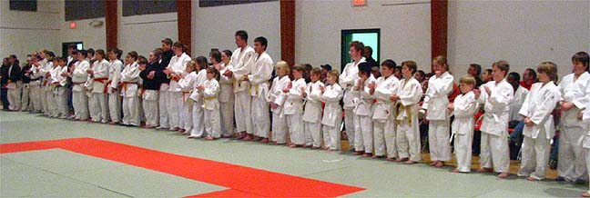
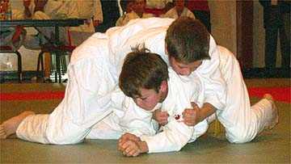
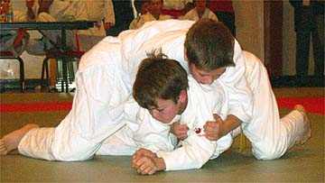
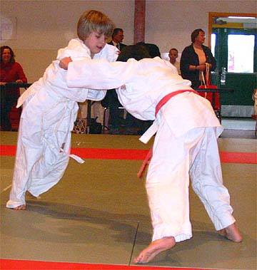
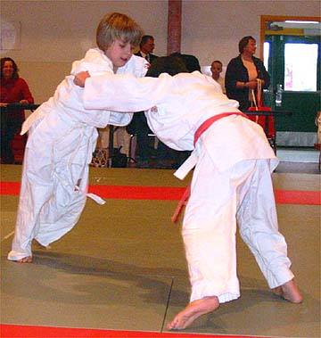
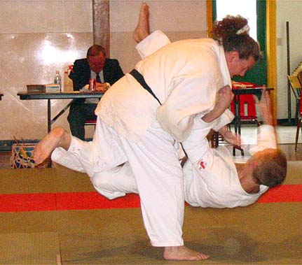
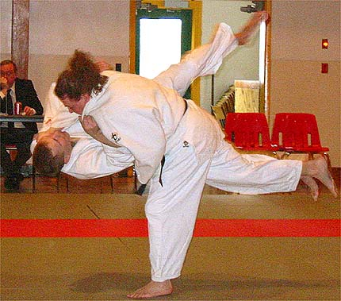
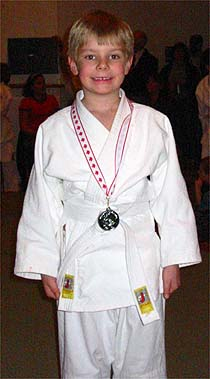
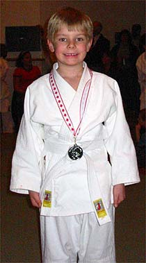

November 27, 2004

Competitors lined up for the official start to the tournament.
 
Competition was fierce!
 
 
Blair Dmytrow and Bernadette Leuschen warm up for the Kata Competition.
 
Congratulations to all the medal winners!

Ralph Ibanez put the advanced group through a grueling workout at team training on Sunday.